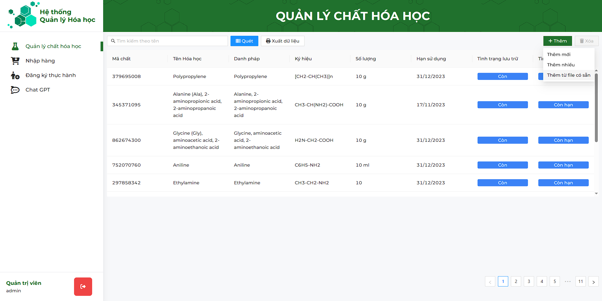
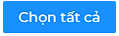
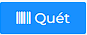
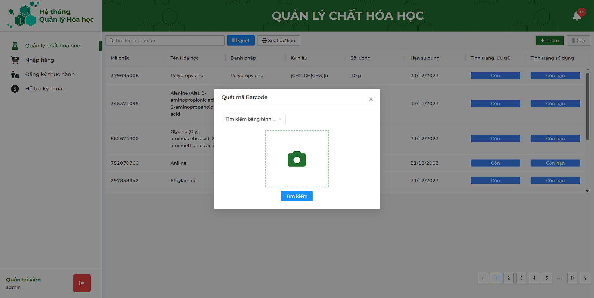
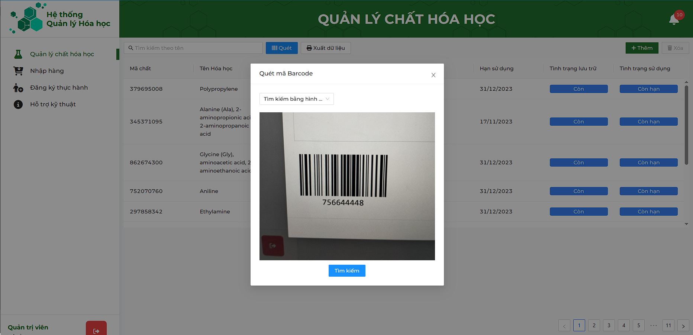

Sau khi đăng nhập với quyền Quản trị viên, hệ thống sẽ chuyển tới trang Quản lý chất hóa học.
Sau khi chuyển tới trang thành công, thông tin danh sách Chất hóa học sẽ được hiện
ra:
Mỗi bản ghi sẽ thể hiện thông tin cơ bản của chất hóa học đó bao gồm Mã chất, Tên Hóa học,
Danh pháp, Ký hiệu, Số lượng, Hạn sử dụng, Tình trạng lưu trữ, Tình trạng sử dụng
Để tìm kiếm chất hóa học, nhập tên Chất hóa học cần tìm vào ô tìm kiếm, sau đó ấn
Enter để tìm kiếm. Ấn nút để xóa tìm kiếm.

Di chuột vào nút Thêm mới
ở góc phải phía trên màn hình danh sách, sau đó chọn mục
Thêm mới, cửa số Thêm mới sẽ hiện ra
Thêm mới hiện ra, nhập những thông tin cần thiết liên quan đến chất hóa học ở trong cửa sổ đó. Các trường Tên chất hóa học, Ký hiệu hóa học, Loại chất, Danh pháp, Số lượng, Đơn vị, Hạn sử dụng là những trường bắt buộc nhập.
Sau đó ấn nút  để lưu thông tin đã nhập
để lưu thông tin đã nhập
để lưu thông tin đã nhập

Nếu bỏ qua một trong số những trường đó, hệ thống sẽ hiện ra cảnh báo:
Tại màn hình danh sách chất hóa học, di chuột tới một bản ghi bất kì, sau đó nhấn đúp chuột, cửa sổ Xem thông tin và chỉnh sửa thông tin chất hóa học sẽ hiện ra, Quản trị viên có thể xem
và chỉnh sửa thông tin chất hóa học tại đây.
Sau đó ấn nút để lưu thông tin đã nhập
để lưu thông tin đã nhập
Tại màn hình danh sách chất hóa học, di chuột tới một bản ghi bất kì, sau đó nhấn chuột trái, sau đó ấn vào nút  để xóa chất hóa học ra khỏi hệ thống. Nếu
chưa chọn bản ghi nào, nút Xóa sẽ bị ẩn đi
để xóa chất hóa học ra khỏi hệ thống. Nếu
chưa chọn bản ghi nào, nút Xóa sẽ bị ẩn đi
để xóa chất hóa học ra khỏi hệ thống. Nếu
chưa chọn bản ghi nào, nút Xóa sẽ bị ẩn đi

Sau khi ấn nút Xóa, cửa sổ thông báo Xác nhận xóa hay không hiện lên, ấn nút để xác nhận xóa, nút Hủy để hủy thao tác
để xác nhận xóa, nút Hủy để hủy thao tác
Di chuột vào nút Thêm mới
ở góc phải phía trên màn hình danh sách, sau đó chọn mục
Thêm mới từ file có sẵn, cửa số Thêm mới từ file có sẵn sẽ hiện ra
Tại cửa sổ Thêm mới từ file có sẵn, ấn chuột trái vào nút  . Cửa sổ chọn file hiện lên, tại đây chọn file có định dạng *.xlsx để đưa vào hệ thống. Mẫu file có thể xem Tại đây
. Cửa sổ chọn file hiện lên, tại đây chọn file có định dạng *.xlsx để đưa vào hệ thống. Mẫu file có thể xem Tại đây
. Cửa sổ chọn file hiện lên, tại đây chọn file có định dạng *.xlsx để đưa vào hệ thống. Mẫu file có thể xem Tại đây
Sau khi chọn file, cửa sổ Thêm mới từ file có sẵn sẽ hiện bảng xem trước những dữ liệu có trong file đó. Sau đó ấn nút để thêm các chất hóa học có trong file vào hệ thống
để thêm các chất hóa học có trong file vào hệ thống
Di chuột vào nút Thêm mới
ở góc phải phía trên màn hình danh sách, sau đó chọn
mục
Thêm nhiều, cửa số Thêm nhiều sẽ hiện ra


Sau khi cửa sổ hiện ra, cửa sổ Thêm nhiều sẽ hiện bản ghi chất hóa học có trạng thái đơn hàng là đã Đã nhận. Click chuột trái vào bản ghi chất hóa học cần thêm vào hệ thống, click thêm một lần nữa vào bản ghi đó để hủy chọn. Click chuột vào nút  để chọn tất cả bản ghi
dữ liệu có trong file đó. Sau đó ấn nút để thêm
các chất hóa học đã chọn vào hệ thống
để thêm
các chất hóa học đã chọn vào hệ thống

Click chuột vào nút
, cửa số Quét mã barcode sẽ hiện ra
Sẽ có 02 lựa chọn đó là tìm kiếm bằng cách Quét mã sử dụng camera của thiết bị và cách thứ hai là tải hình ảnh mã Barcode lên
Khi chuyển sang chế độ Tìm kiếm bằng hình ảnh, cửa sổ sẽ chuyển sang chế độ tải hình ảnh lên. Click chuột trái vào vùng tải ảnh, chọn ảnh barcode phù hợp.

Click chuột vào nút tìm kiếm chất hóa học
Lưu ý: Mã Barcode phải được nằm chính giữa cách bốn lề một khoảng nhất định

Click chuột vào nút
 để xuất tất cả thông tin của các chất hóa học còn lại trong kho thành file *.xlsx
để xuất tất cả thông tin của các chất hóa học còn lại trong kho thành file *.xlsx